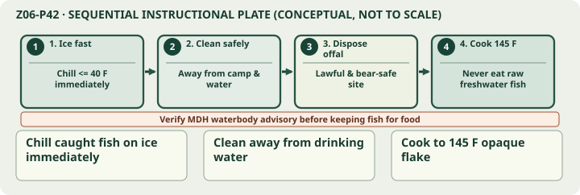

Z06-P42 · Hunting and fishing · New manuscript
Safe Fish Cleaning, Cold Chain and Parasite Cooking Verification
Prevent bacterial spoilage and freshwater fish tapeworm/parasite infection through rapid icing and thorough cooking.
When it applies · Cleaning, storing, and cooking advisory-cleared freshwater fish.
Equipment · Clean ice cooler, fillet knife, potable water, food thermometer.

Actions
- Keep retained legal fish cold on clean ice immediately—rather than dragging warm dead fish on a stringer in summer surface water—to slow bacterial spoilage and histamine formation.[H05, F01]
- Clean fish hygienically away from drinking-water intakes and dispose of fish entrails lawfully per DNR/park rules (never dump fish remains at boat ramps or bear-country campsites).[H01, H12]
- Cook freshwater fish thoroughly to an internal temperature of 145 F (63 C) until flesh is opaque and flakes easily; never eat raw or lightly pickled wild freshwater fish due to tapeworm parasites.[F02, H05]
Failure recognition · Leaving caught fish on a warm stringer for hours or eating raw freshwater fish causes foodborne illness and fish tapeworm infection.[H05, F01, F02]
Verify · Fish stays iced below 40 F, offal is disposed lawfully away from camp/water, and fillets reach 145 F before serving.[H05, H12, F02]
Stop or change course · Stop and discard fish that smells strongly ammoniacal/sour, has sunken cloudy eyes and mushy flesh, or lacks MDH advisory clearance.[H04, F01]
Evidence and editorial notes
- F01 · USDA / FDA / CDC · Four Steps to Food Safety (current web edition)
- Section: Clean and Separate · Conditions: Food preparation with safe water and surfaces
Support: Wash hands and separate raw animal foods and juices from ready-to-eat food.
Limitations: Requires safe water or approved hand hygiene substitutes in outages. · Conflicting evidence: None; retained for food safety pack completeness.
Editorial note: Maintains five-pack integrity. · Specialist reviewer: Food safety and public health
Primary source · checked 2026-11-24 - F02 · USDA / FDA / CDC · Four Steps to Food Safety (current web edition)
- Section: Cook > Minimum internal temperature · Conditions: Food preparation with a working food thermometer
Support: Use food-specific safe internal temperatures; visual appearance alone cannot verify cooking.
Limitations: Thermometer calibration and probe placement affect readings. · Conflicting evidence: None; retained for food safety pack completeness.
Editorial note: Maintains five-pack integrity. · Specialist reviewer: Food safety and public health
Primary source · checked 2026-11-24 - H01 · Minnesota DNR · Minnesota Fishing Regulations (Current web edition)
- Section: Licensing, seasons, limits, and waterbody-specific rules · Conditions: Minnesota angling across inland, border, and designated waters
Support: Anglers must hold a valid license unless explicitly exempt and verify current season dates, possession limits, size slots, and special waterbody rules before fishing.
Limitations: Regulations change annually and differ on border waters, trout streams, and tribal/ceded territories; no emergency creates an automatic legal exemption. · Conflicting evidence: None noted.
Editorial note: Establishes Z06 fishing authority gate. · Specialist reviewer: Minnesota DNR fisheries and legal reviewer
Primary source · checked 2026-11-25 - H04 · Minnesota Dept. of Health · Fish Consumption Guidance and Waterbody Advisories (Current web edition)
- Section: Waterbody-specific fish consumption advisories (mercury, PFAS, PCBs) · Conditions: Consuming Minnesota caught freshwater fish
Support: MDH issues species-, size-, and waterbody-specific meal-frequency limits for mercury, PCBs, and PFAS, with stricter limits for pregnant/nursing people and children under 15.
Limitations: Visual fish health and water clarity cannot detect mercury, PFAS, or PCBs; check current MDH waterbody lookup before eating caught fish. · Conflicting evidence: None noted.
Editorial note: Mandatory Z06 public-health fish advisory gate. · Specialist reviewer: Public-health toxicologist and MDH reviewer
Primary source · checked 2026-11-25 - H05 · Minnesota Dept. of Health · Fish Consumption Guidance Program Overview (Current web edition)
- Section: Trimming fat and skin limits for organic contaminants vs mercury · Conditions: Cleaning and preparing advisory-screened freshwater fish
Support: Trimming belly/dorsal fat and removing skin can reduce fat-soluble PCBs, but mercury binds in muscle tissue and cannot be trimmed or cooked out.
Limitations: Cleaning methods never replace checking waterbody-specific advisories or respecting do-not-eat notices. · Conflicting evidence: None noted.
Editorial note: Distinguishes PCB trimming from mercury persistence. · Specialist reviewer: Environmental health specialist
Primary source · checked 2026-11-25
Current assessment · A04-H05 (2026-11-25) · Bounded support confirmed from an alternate source (A04): Removing fatty tissue can reduce PCBs. It cannot remove mercury or PFOS. Waterbody, species and population advice remains controlling. Limits: Specialist review PENDING (Environmental health specialist); publication HOLD. All release decisions pending. - H12 · Minnesota DNR · Living with Black Bears and Encounter Safety (Current web edition)
- Section: Black bear encounter avoidance and attractant control · Conditions: Campsites, fishing shores, and trails in bear range
Support: Store food, fish waste, and scented items securely; make calm noise in thick cover, back away slowly without running, and never approach cubs.
Limitations: Bear behavior varies with habituation and food stress; carry and know local bear-deterrent rules where appropriate. · Conflicting evidence: None noted.
Editorial note: Core Z06 wildlife encounter avoidance. · Specialist reviewer: Wildlife conflict specialist
Primary source · checked 2026-11-25
Current assessment · A04-H12 (2026-11-25) · Reopened: earlier closure narrowed (A04): Source supports managing attractants. The full behavior string spans encounters and may depend on species and behavior. Do not reuse as unconditional advice. Limits: Specialist review PENDING (Wildlife conflict specialist); publication HOLD. All release decisions pending.
Source lineage · New manuscript (Z06 P17 food safety) · Classification · New manuscript.